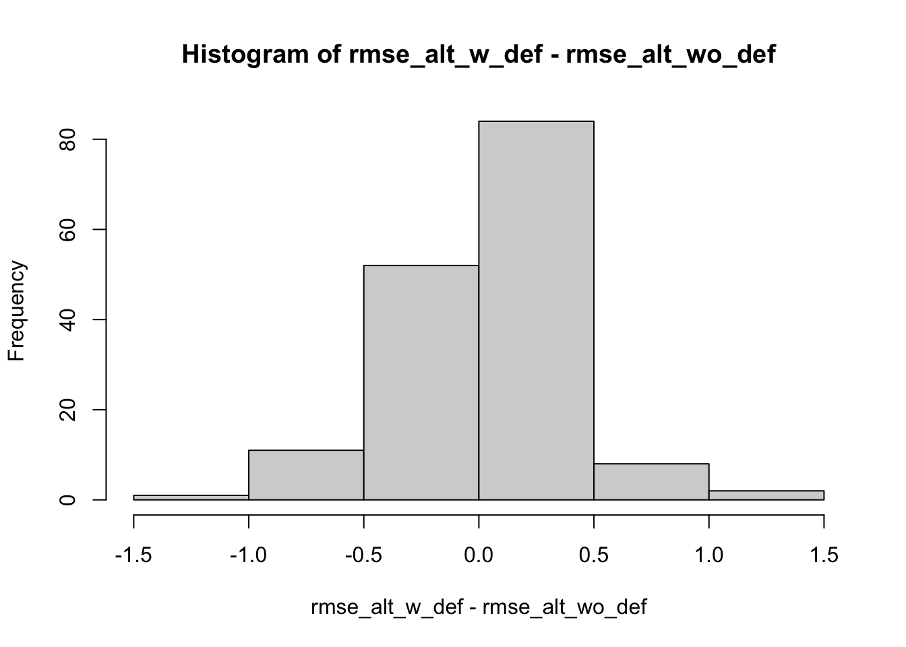
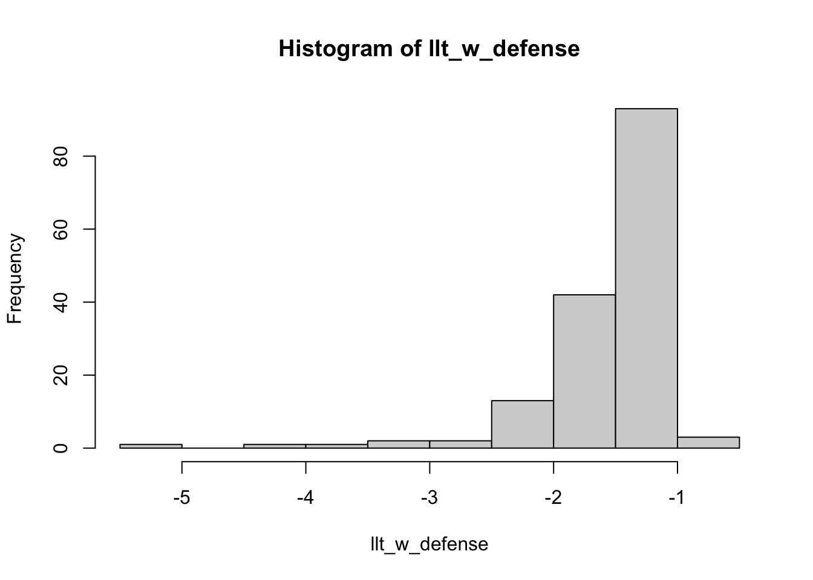

The purpose of this demo is introduce approaches for comparing Bayesian regression models. Similar to the last demo, we will use the soccer match data from HW1. As a reminder, this dataset in the homeworks/hw1 folder on Canvas (soccer_match_goals.csv) and contains the goals scored across men’s soccer matches in the five biggest European leagues during the 2023-2024 season. This dataset contains the following columns:
goals: number of goals scored by team in a match
xG: accumulated number of expected goals by team in a match
off_team: the team name affiliated with the offense scoring the number of goals and total xG
def_team: the team name affiliated with the defense allowing the number of goals and total xG
league: string denoting the country: ENG (Premier League), ESP (La Liga), FRA (Ligue 1), GER (Fußball-Bundesliga), and ITA (Serie A)
match_id: unique identifier for each match, such that each match has two rows in the dataset, one for the home team and one for the away team
is_home: binary indicator denoting whether or not the team was the home team in the match.
Note that each row in this dataset corresponds to information about a team’s offensive performance for a single match. This means a team is repeatedly observed for each match they played during the 2023-2024 season. I constructed this dataset using the worldfootballR package, and the script init_soccer_match_goals.R on Canvas is the code I used to make the dataset.
The code chunk below loads in the data, and then for ease we’ll only consider matches in the Premier League (i.e., league == ENG).
library(tidyverse)match_goals_scored <-read_csv(here::here("data/soccer_match_goals.csv"))# Create the ENG only table:eng_match_goals_scored <- match_goals_scored |>filter(league =="ENG")eng_match_goals_scored
# A tibble: 760 × 7
goals xG off_team def_team league match_id is_home
<dbl> <dbl> <chr> <chr> <chr> <dbl> <dbl>
1 0 0.3 Burnley Manchester City ENG 1 1
2 2 0.8 Arsenal Nott'ham Forest ENG 2 1
3 0 2.7 Everton Fulham ENG 3 1
4 0 0.5 Sheffield Utd Crystal Palace ENG 4 1
5 4 4 Brighton Luton Town ENG 5 1
6 1 1.3 Bournemouth West Ham ENG 6 1
7 5 3.3 Newcastle Utd Aston Villa ENG 7 1
8 2 2.2 Brentford Tottenham ENG 8 1
9 1 1.4 Chelsea Liverpool ENG 9 1
10 1 2.2 Manchester Utd Wolves ENG 10 1
# ℹ 750 more rows
Fitting models in brms
As in the previous demo, we’ll continue to model the same goals scored response variable using a Bayesian hierarchical Poisson regression model. But rather than using the rstanarm package, we’ll now switch to the popular brms package that was demonstrated to you by Quang Nguyen in his guest lecture. The brms package is effectively the same as rstanarm, but provides greater flexibility in the types of models it can fit (see here for a nice summary by one of the Stan developers) - along with more helper functions that were developed to work with it.
The following code chunk shows you how to fit the same Poisson model in the previous demo, along with viewing the summary, and extracting the posterior samples for analysis:
library(brms)
Warning: package 'brms' was built under R version 4.2.3
Loading required package: Rcpp
Warning: package 'Rcpp' was built under R version 4.2.3
Loading 'brms' package (version 2.21.0). Useful instructions
can be found by typing help('brms'). A more detailed introduction
to the package is available through vignette('brms_overview').
Attaching package: 'brms'
The following object is masked from 'package:stats':
ar
You’ll notice that there are two Intercept terms displayed in the output: b_Intercept and Intercept. You can ignore the Intercept column because that refers to the intercept on the mean-centered scale that brms automatically performs beforehand (this is done because it is usually more stable in the model fitting process). So from an inference perspective, you can ignore Intercept. The fixed effects are all represented by the terms with b_ in the prefix (e.g., b_Intercept, b_is_home).
Model comparison and selection
Let’s imagine we’re interested in comparing two different models:
the model from above goals ~ is_home + (1 | off_team) + (1 | def_team), and
the model with def_team random effects removed goals ~ is_home + (1 | off_team).
We could assess the training data performance of the models, but we know that will likely be biased towards more complex models. Instead, we should consider implementing some type of out-of-sample comparison via train/test splits or \(K\)-fold cross-validation to compare the models. Bayesian regression models are no different than frequentist regression models in the sense that we should evaluate how the models generalize to new data. However, the downside is that the Bayesian models tend to take longer to fit which makes implementing cross-validation time consuming (depending on the model you’re fitting).
To demonstrate, I’m only going to consider a random 80/20 split in this demo - but you really should use cross-validation instead! The code below initializes the training and test datasets we’ll use to compare the two models:
Next, we’ll fit the two models on the training data. For ease, we’ll speed things up with cmdstanr which effectively makes the model fitting faster since it does not directly call any C++ code from R. Additionally, the latest improvements in Stan will be available from R immediately after updating CmdStan via the package installation step: cmdstanr::install_cmdstan(). This will also work better with external processes, such as rendering a Stan model in Quarto or when knitting a RMarkdown file (you may notice an error message in my original brms fit above that does not use cmdstanr - but this “fake” error is only an artifact of the rendering step).
# Fit the model with defensemodel_w_def <-brm(goals ~ is_home + (1| off_team) + (1| def_team),family = poisson, backend ="cmdstanr",data = train_data, seed =2013)
For our initial comparison, we’ll evaluate each model’s predictions using root mean squared error (RMSE). If you remember from the previous lecture/demo, when we generate predictions with Bayesian regression models we will have a prediction for every observation with every posterior sample. For instance, the following code chunk generates the test data predictions using the posterior distribution for the conditional expectation (i.e., posterior_epred from last time) with model_w_def:
Warning: The `x` argument of `as_tibble.matrix()` must have unique column names if
`.name_repair` is omitted as of tibble 2.0.0.
ℹ Using compatibility `.name_repair`.
You can see that this creates a dataset with a row for each posterior sample, along with a column for each observation (158 in this case). We can compute the traditional point estimate version of RMSE, by first taking the posterior mean of each observation’s prediction (i.e., column means) and then computing the RMSE across all observations:
From this we can see that the model with defense included displays better performance (this should not be surprising).
However, this is just a single number summary. Instead of collapsing every observation’s prediction into a one number, we could take also advantage of the posterior samples. While you could manually compute the test error for each of the posterior sample predictions, brms has a convenient predictive_error() function that will return this for you. For convenience, brms has a function predictive_error() that will return the matrix of test errors (i.e., observed - predicted) for each posterior sample (the rows) and observations (the columns). For instance, the following code chunk generates the test data prediction errors using the posterior distribution for the conditional expectation (i.e., posterior_epred from last time) with model_w_def:
Compute RMSE for each observation (i.e., for each column) and then observe distribution of RMSE values across observations. We’ll refer to this as \(RMSE_{alt}\):
This histogram is very different than the previous one, because we now observe an RMSE value for each observation, averaging over the posterior samples. One of the reasons we would want to do this, is that we can then take the difference in the \(RMSE_{alt, i}\) values for each observation \(i\) between two models. In other words, for each observation we can compute \(RMSE_{alt, i}^{Model1} - RMSE_{alt, i}^{Model2}\). The following code first computes the \(RMSE_{alt}\) values for each observation with model_wo_def and then computes the difference between the model_w_def and model_wo_def values across the observations:
test_error_wo_def_samples <-predictive_error(model_wo_def, newdata = test_data,method ="posterior_epred")rmse_alt_wo_def <-sqrt(colMeans(test_error_wo_def_samples^2))# Display the histogram of the differenceshist(rmse_alt_w_def - rmse_alt_wo_def)

Using this distribution of differences, we can also compute mean difference with standard errors to provide us with some notion of uncertainty about the difference between the performance of the two models:
mean_rmse_alt_diff <-mean(rmse_alt_w_def - rmse_alt_wo_def)se_rmse_alt_diff <-sd(rmse_alt_w_def - rmse_alt_wo_def) /sqrt(nrow(test_data))# Display interval:(c(sum(mean_rmse_alt_diff) -2* se_rmse_alt_diff, # mean - 2 * SE mean_rmse_alt_diff, # meansum(mean_rmse_alt_diff) +2* se_rmse_alt_diff)) # mean + 2 * SE
[1] -0.0522383287 -0.0004198031 0.0513987225
From this, we can see that the model with defense is on average slightly better than the model without defense (since lower RMSE is better). However, this difference is within two standard errors so we don’t have enough evidence to claim the model with defense is better than the one without.
Of course, in the steps above we generated the predictions using the posterior distributions of the models’ conditional expectations (via posterior_epred). We could instead repeat the above steps using the posterior predictive distributions (via posterior_predict) to generate the RMSE values. I’ll leave that for you as an exercise to see how accounting for outcome-level uncertainty affects the results.
ELPD Comparison
As an alternative to RMSE, we can also consider likelihood-based measures of performance. Simply put, the higher the likelihood of the test data given the model’s parameter estimate then the better the fit of the model to the data. This leads us to computing the expected log pointwise predictive density (ELPD) of a model which is the sum of the posterior mean log-likelihood values across observations. For instance, the following computes the posterior mean of the log-likelihood values for each test data observation using model_w_def:
llt_w_defense <-colMeans(log_lik(model_w_def, newdata = test_data,# In case there are new level in the test dataallow_new_levels =TRUE))hist(llt_w_defense)

The log_lik function conveniently computes the log-likelihood for us and returns a matrix in a similar way to the brms predict functions, with one row per posterior sample and one column per observation. The above histogram displays the distribution of posterior mean log-likelihood values for each observation. The ELPD for this model is simply the sum of these values:
sum(llt_w_defense)
[1] -242.3975
We can repeat for the model without defense and take the difference in their ELPD values:
We observe that the ELPD for the model with defense is better (because it’s higher), but is this noticeably higher? In order to make such claim, we can compute the standard error of this ELPD difference since it is the sum of log-likelihood differences between the two models. The standard error for a sum is different than the standard error for a mean, it is computed as standard deviation of the quantity multiplied by the square root of the length. The following code chunk computes the standard error for this particular ELPD difference:
This standard error tells us that the ELPD difference is about 1.5 standard errors away from zero (\(\approx\) 4.246794 / 2.916453). While we have some evidence that the model with defense is better than the model without defense, it is not overwhelming evidence.
One of the benefits of using the log-likelihood based criterion like ELPD is that it is based on the evaluating the posterior predictive distributions at the observed test data response values. The posterior_epred version of predictions that we used in the RMSE demonstration above completely ignores the outcome-level distribution that is accounted for with the posterior predictive distribution via posterior_predict. However, posterior_predict relies on sampling values from the posterior predictive distribution. This means that the likelihood-based measure can provide us with a stable way of measuring performance for more extreme response values in the tails, without depending on sampling unstable values from the posterior predictive distribution. This leads to the ELPD being a very common approach for comparing two different models. While it is ideal to compute the ELPD differences with cross-validation rather than a single train/test split, you can read here for information about a leave-one-out shortcut approach for ELPD differences that is commonly used in Bayesian model selection problems.